GENERAL SPECIFICATIONS
- Type 6 speed automatic transmission
- Structure: 3 clutches, 2 brakes, 1 free wheel, 2 epicyclic trains
- Hydraulic: 4 linear solenoids, 2 on/off solenoids
- Electronic: Neutral Start Switch and control unit built-in, internal wiring and speed sensors
|
NAME |
AISIN AF40-6 |
|||
|
TRANSMISSION RATIO |
1 |
4.148 |
||
|
2 |
2.370 |
|||
|
3 |
1.556 |
|||
|
4 |
1.155 |
|||
|
5 |
0.859 |
|||
|
6 |
0.686 |
|||
|
R |
3.394 |
|||
|
Idler shaft |
0.836 |
|||
|
Differential |
3.188 |
|||
|
BRAKES AND CLUTCHES |
CLUTCHES |
C1 |
1 flange, 6 discs, 6 plates |
1 flange, 7 discs, 7 plates |
|
C2 |
1 flange, 3 discs, 3 plates |
1 flange, 4 discs, 4 plates |
||
|
C3 |
1 flange, 4 discs, 4 plates |
|||
|
BRAKES |
B1 |
Band |
||
|
B2 |
2 flanges, 6 discs, 5 plates |
2 flanges, 6 discs, 5 plates |
||
|
One-Way |
F1 |
Roller type |
||
|
SOLENOIDS |
Shift solenoid |
no. 2 |
||
|
Linear |
no. 6 |
|||
OPERATION
Neutral control
When the vehicle stops with the lever in position "D", the clutches are automatically released and the transmission changes to neutral. In this way, the torque converter is not put under stress, there are fewer vibrations and fuel consumption is minimal.
On rough roads or on hills, the function is not activated. On hills, the transmission remains engaged to ensure a hill holder effect.
Reversing control
When the gear lever is shifted from "N" to "R", reverse is not engaged if vehicle speed exceeds 11 km/h.
Adaptivity
|
MODE |
DESCRIPTION |
|
ADAPTIVITY |
Used during normal driving. The sports or economy modes are selected automatically depending on driving conditions |
|
SPORT |
In this mode, the gear shift points and lock-up operation are higher because the engine rpm is higher |
|
WINTER/LOW GRIP |
In the event of ice, snow or low grip in general, the car sets off in third gear to prevent the front wheels slipping |
|
TIP |
When the lever is moved from “D” to “+/-”, the driver can select the gear shift point sequentially. In any case, the control unit changes the ratio automatically to prevent over-revving or conversely to prevent juddering because the engine speed is too low. |
|
HIGH TEMPERATURE |
If the transmission fluid temperature is too high, the control unit advances lock-up intervention to prevent the torque converter slipping excessively, thus lowering the temperature. |
|
HEATING |
Conversely, in this case the converter slip is preferred to heat the fluid. |
|
GRADIENT |
A gradient is automatically detected by a control unit algorithm based on rpm increase. The speed passage points are increased. |
|
DESCENT |
Conversely, on a descent, the system uses certain features to prevent excessive use of the brakes (lock-up etc.) |
|
FAST ON |
This control computes the driver''s desire for performance expressed by pressure on the accelerator pedal, and adjusts the gear shift points accordingly. |
|
BRAKE ASSISTANCE |
Conversely, in this case the engine brake is used to help the driver during acceleration (detected via the accelerator pedal) |
COMPONENTS
Control unit
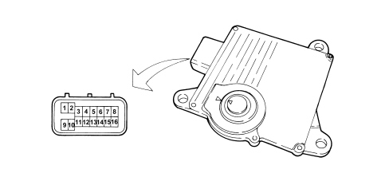
The control unit is fitted on the speed engagement selector and assists the gearbox and gear control lever management functions.
PIN OUT
|
1 |
Key switch signal |
|
2 |
N.C. |
|
3 |
N.C. |
|
4 |
K line |
|
5 |
Steering lock signal |
|
6 |
CAN L |
|
7 |
CAN H |
|
8 |
CAN H |
|
9 |
Earth |
|
10 |
N.C. |
|
11 |
Fuel system |
|
12 |
N.C. |
|
13 |
Reversing light relay |
|
14 |
CAN L |
|
15 |
N.C. |
|
16 |
N.C. |
Input/output managed by the control unit
The interface with the automatic transmission system manages information by means of the following serial networks:
C-CAN (information, data)
K line (diagnosis)
|
SIGNAL |
I/O |
TRANSMISSION TYPE |
|
Key status |
I |
CAN |
|
System warning light |
O |
CAN |
|
Transmission fluid max temperature warning light |
O |
CAN |
|
Speed engaged display |
O |
CAN |
|
Gear selection |
I |
CAN |
|
System diagnosis |
I/O |
K |
|
Vehicle speed |
I |
CAN |
|
Brake pedal pressed for recovery (brake lights contact) |
I |
CAN |
|
Driver''s front door status |
I |
CAN |
|
Horn activation |
O |
CAN |
|
Start-up enablement to NBS |
O |
on/off @GND |
|
Reversing light control |
O |
on/off @+15 |
|
Engine coolant temperature |
I |
CAN |
|
Engine torque change request |
O |
CAN |
|
MIL warning light activation request |
O |
CAN |
Wiring
The wiring is located inside the gearbox, it is connected to the inside of the valve body:
- to the speed sensors
- to the fluid temperature sensor
- to the solenoids
The wiring is connected to the transmission control unit with an Aisin pin-to-pin connector.
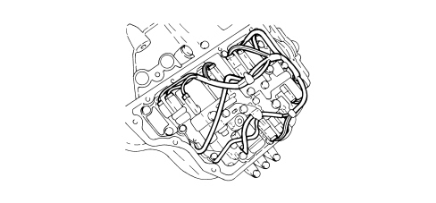
Solenoid unit
The solenoid unit, via solenoids activated by signals from the control unit, supplies hydraulic pressure produced by the oil pump to the brakes, clutches and lock-up. Part of the fluid is also sent to lubricate the mechanical components.
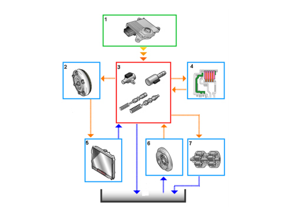
1. Control unit
2. Torque converter
3. Solenoid unit
4. Brakes/clutches
5. Oil radiator
6. Oil pump
7. Epicyclic gear set
Solenoids
The linear solenoids shown in the figure control the hydraulic pressure of almost all the brakes/clutches
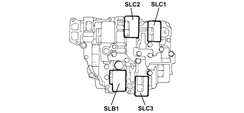
ON/OFF solenoids: these 2 solenoids control brake "B2" for the engine brake in first gear
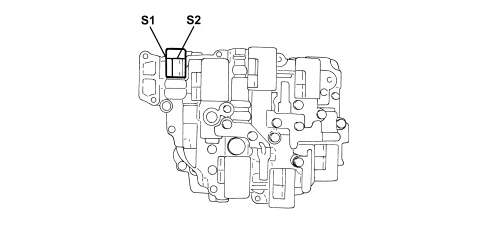
Linear solenoid SLT: controls line pressure in a linear way on the basis of a throttle signal and engine torque
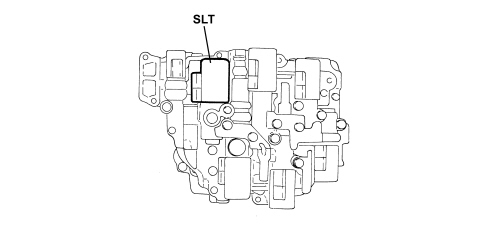
Linear solenoid SLU: controls lock-up pressure in a linear way in relation to:
throttle signal
engine rpm
gearbox input speed
gearbox output speed
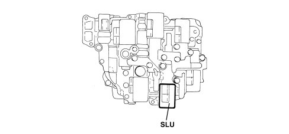
Sensors
Lever position sensor (nsw)
The position sensor is Hall effect and is built into the control unit. It sends the gear lever position.
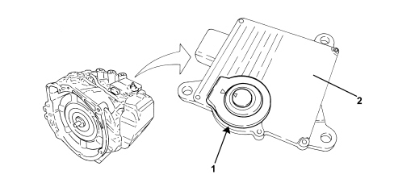
1. Lever position sensor
2. Control unit
Fluid temperature sensor
The fluid temperature sensor is an NTC and is incorporated in the wiring.
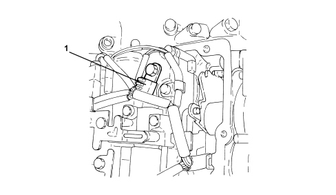
1. Oil temperature sensor
Specifications:
|
Temperature (°C) |
Resistance (kΩ) |
|
10 |
5.62-7.31 |
|
25 |
3.5 |
|
110 |
0.22-0.27 |
Speed sensors
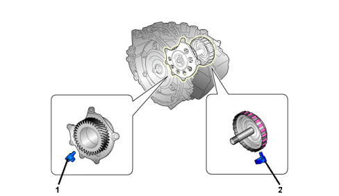
1. Output speed sensor
2. Input speed sensor
The input speed sensor detects the input rotation speed to the gears, i.e. the converter turbine speed.
The output speed sensor detects the rotation speed of the gear that carries drive to the differential.
GEAR CONTROLS
The request to change gear may take place in the following ways:
- sequential (manual) or automatic via the selector lever
- sequential (manual) via the steering wheel controls (where present).
Selector lever
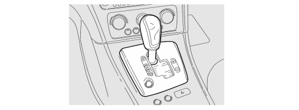
P = Park
R = Reverse
N = Neutral
D= Drive, automatic forward gear
+ = Shift to higher transmission ratio in sequential mode
- = Shift to lower transmission ratio in sequential mode

|
In an emergency, proceed as described below to release the position of the selector lever: move the driver''s seat backwards, open the sliding flap (a) and adjust the unlocking lever (b). |
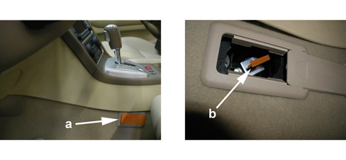
Manual sequential command from selector lever
The 6 gear changes can be managed sequentially by moving the lever to the right and lifting it towards the + to engage a higher ratio or lowering it towards the - to engage a lower gear.
Each gear engaged is shown by a number on the instrument panel display.
Automatic control from selector lever
The automatic D control can be selected from sequential operation in any driving conditions.
The optimum ratio is selected by the gearbox electronic control unit depending on the engine speed and load conditions.
Manual sequential command from steering wheel (where present)
The change can be managed sequentially via the controls on the steering wheel.
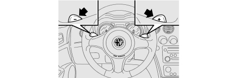
To use the controls on the steering wheel, the gear lever must be in a (manual) sequential position:
- operating the lever on the steering wheel in the + direction engages a higher ratio
- operating the lever on the steering wheel in the - direction engages a lower ratio.
Automatic driving mode selection (where present)
Different driving modes can be selected using the SPORT/WINTER button in the gear control panel.
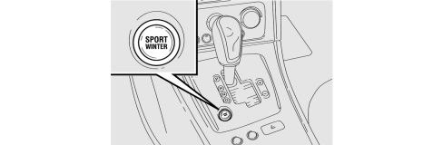
The following driving modes are available:
- NORMAL: gear changes at low engine speeds, favouring comfort and reduced consumption
- SPORT: gear changes at higher engine speeds, enhancing sporty driving
- WINTER: programme for setting off on roads in poor grip conditions.
The selection mode remains in force until the button is pressed again or the engine is switched off.